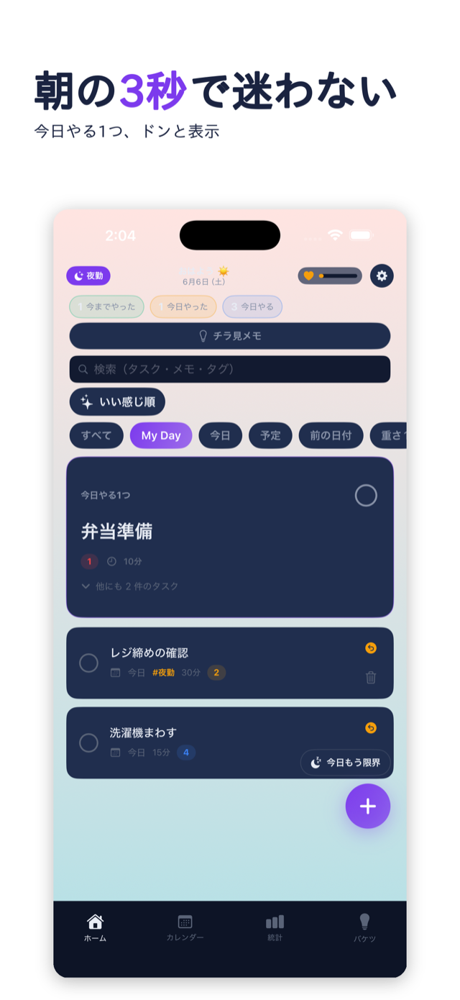
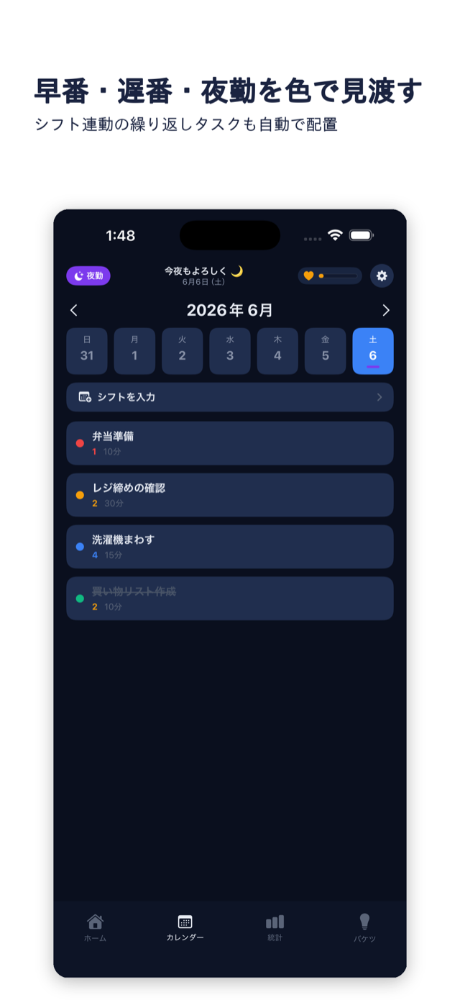
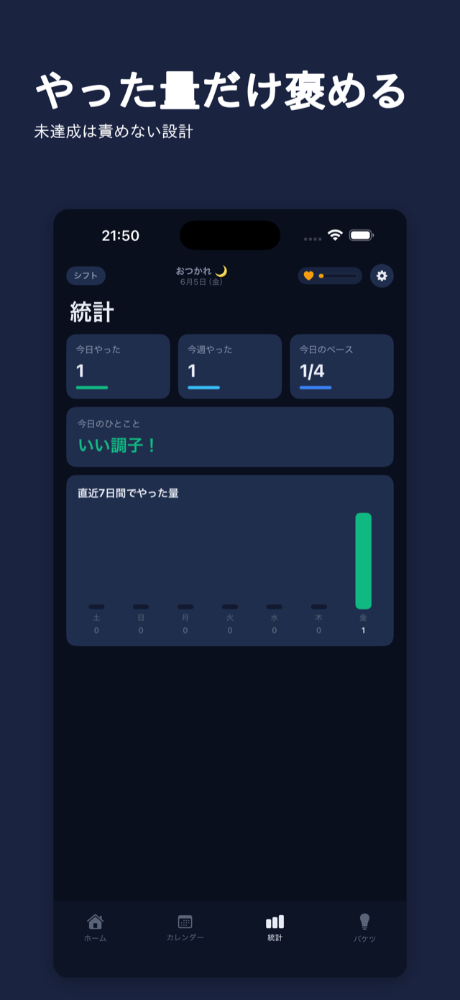
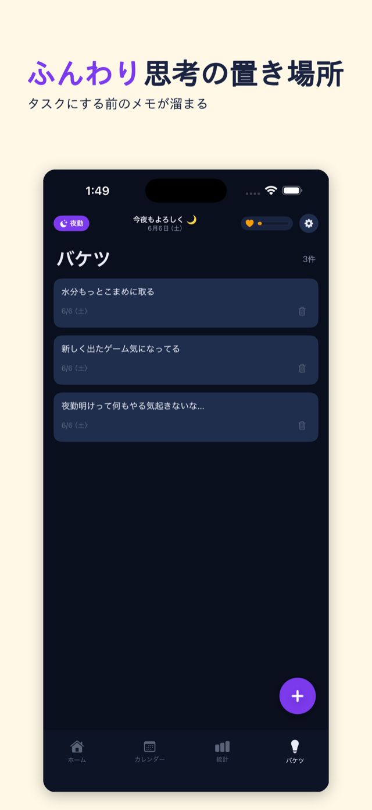

夜勤・早番・遅番で予定が変わっても、タスクのほうが勝手についてくる。期限切れの赤バッジも、未達の詰め寄りもない。責めないタスク管理アプリ、Paceful。

固定の繰り返し設定は、シフトがズレた瞬間に役に立たなくなる。結局、毎回手で直すことになる。
早番が遅番に変わっただけで、登録した予定とリマインダーを総入れ替え。面倒で開かなくなる。
期限切れがずらりと並んで、見た瞬間に気持ちが沈む。それでまた、アプリから離れてしまう。

あとはカレンダーをタップして「この日は夜勤」と置いていく。タスクに「夜勤の日に出す」を紐づければ、シフトが変わるたびに該当タスクが勝手にスライドする。シフト表の写真読み込みみたいな大げさな仕組みはいらない。
残りは下にスクロールするまで出てこない。タスクは期限ではなく「やる気の強さ」で3段階。絶対今日・できれば今日・いつか。細かく分けすぎないから、選ぶのに疲れない。


軽いタスクが今日のリストから外れて、絶対やるやつだけ残る。罪悪感を最小にして、ちゃんと休める。期限切れを赤くしないし、「N件未達成」も出さない。久しぶりに開いても、フラットに迎える。
「これやりたいかも」を、タスクにする前にそのまま放り込む。仕分けは後でいい。
チェックした瞬間に弾けて、軽く震える。地味だけど、終わった感がちゃんとある。
シフトに合わせて画面の色や挨拶が変わる。夜勤明けの朝にも馴染む。
データは端末の中だけ。サーバー送信なし、アカウント登録なし。
広告もトラッキングもなし。集中をじゃまするものを置かない。
主要な機能はぜんぶ無料で使える。まず試してから決めればいい。
これを作っているのは、不規則シフトで働きながら、自分が毎日使いたくて開発している個人です。きっちり管理されると逆に動けなくなるタイプの人に、ちょうどいい距離感を目指しています。「赤バッジで詰められるのが嫌い」だから、そう作りました。